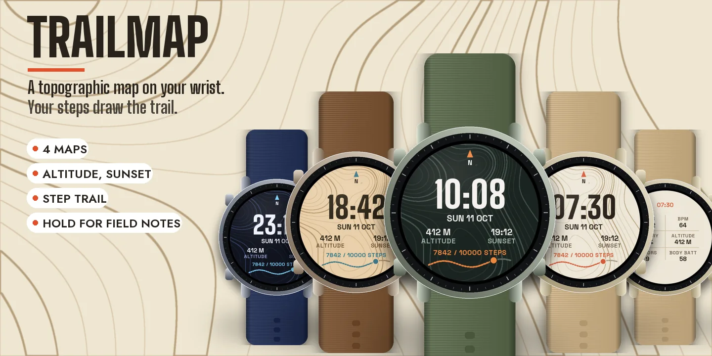
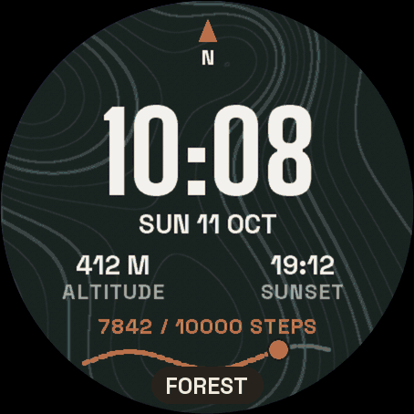
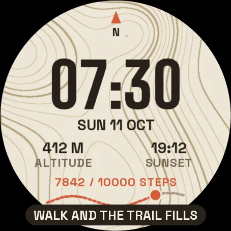
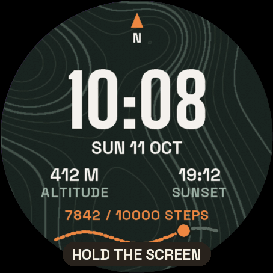
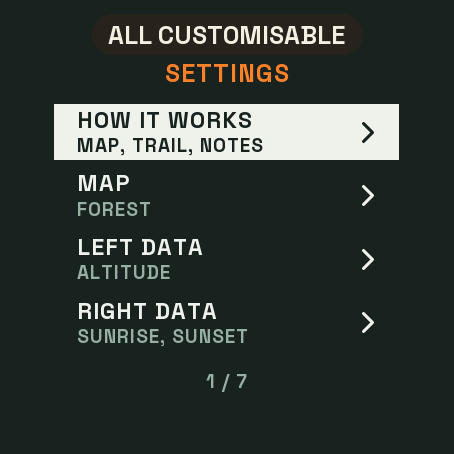
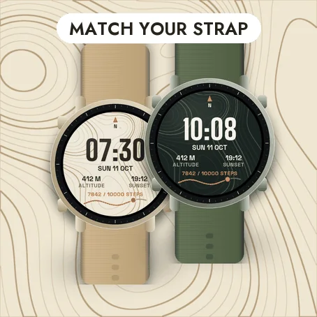

TibereJ › Watch faces › TRAILMAP
Watch face for Garmin watches
TRAILMAP
Topographic Trail Watch Face







Settings on the watch
Hold UP, pick Watch Face, select Trailmap, press START, then Customize. The menu is drawn like the map: a short How it works guide, the map, the data on the left and on the right, the hours, the leading zero and the always-on brightness. The same settings are in Garmin Connect if you prefer the phone.
A topographic map on your wrist
The background is a drawn topographic map with contour lines, thicker index lines and a north arrow. The time sits on top in big condensed digits, with the date and two values of your choice: altitude and the next sunrise or sunset by default.
Your steps draw the trail
At the bottom, a dotted trail crosses the map. As you walk, the trail fills in colour towards your step goal and a marker shows where you are. Reach the goal and a flag appears at the end.
Hold for the field notes
On watches with a touchscreen, press and hold the screen to see six values at once: steps, heart rate, battery, altitude, floors and Body Battery. Hold again to go back. If your watch has no value, it shows -- rather than a made-up number. Nothing leaves the watch.
Make it yours
- Four maps: Forest, Night, Paper and Sand.
- Left and right data: altitude, sunrise and sunset, heart rate, watch battery, temperature, Body Battery, floors, distance or calories.
- Hours like your watch, or always 24-hour, or 12-hour with or without a leading zero.
Always-on
A separate always-on design on a black screen: the time in grey with the day and the date. It shifts slightly every minute to protect the screen. A brighter option is in the menu.
Compatible with the Garmin AMOLED watches listed below. English only. Questions or a watch you would like to see supported: use the support e-mail on this page.